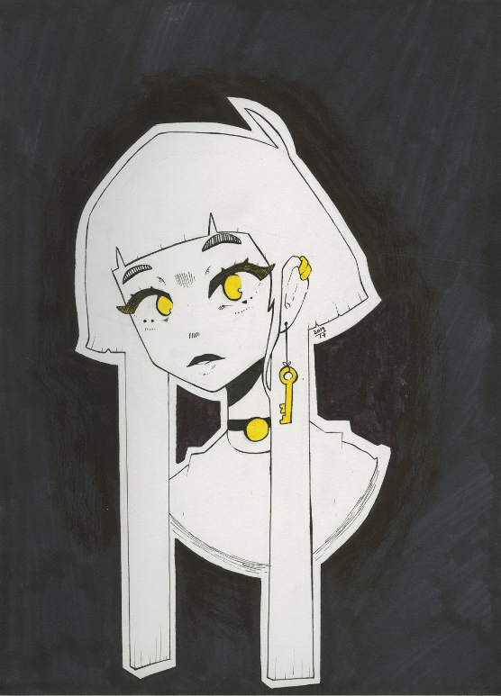

Welcome to Hellish Icon!
I am the Author, Colorist, Inker, and Writer, I go by Trickertree, but you can call me Tree.
I have been Illustrating since 2016 on twitter under @The_Trickertree. I have been known for cute characters and my distinct style. What drives me into comics is the ability to storytell. All throughout my time as an illustrator, I have always wanted to tell a story through my work and have tried through illustrative pictures. I was not satisfied with the quality of depth in the story, which is where I come with Hellish Icon.
Hellish Icon is an exploration through my known themes but giving a "spotlight" to characters that I love. We experience Ayn, an already famous popstar/idol who works with her partner BAB to find a masked singer who threaten's Ayn's current standing in the competitive ranks of the Idols.